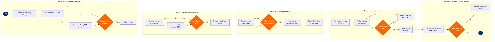

| Step | L4 Step Name | KPI / Target | Pain Point / Risk | Gate |
|---|---|---|---|---|
| 1.1 | Extract O&D booking history from data lake | Data completeness ≥99%; extraction latency <2 hours from departure day-close | Connecting itineraries booked via GDS often log leg-level data only; O&D reconstruction requires custom passenger name record (PNR) stitching logic that breaks during irregular operations | |
| 1.2 | Segment O&D demand by fare class and channel | Segment classification accuracy ≥92%; misclassified itineraries <5% of O&D pairs | Carriers without seat assignment (open-boarding models) lack seat-map signals for travel-purpose inference, reducing segmentation accuracy vs. assigned-seat competitors | |
| 1.3 | Generate 90-day O&D demand forecast | Mean Absolute Percentage Error (MAPE) ≤8% at 60-day horizon; ≤12% at 90-day horizon | SkyCAST demand models require minimum 18 months of stable history per O&D; new routes or routes disrupted by major events (e.g., network collapse, weather) cause cold-start forecast degradation | |
| 1.4 | Validate forecast against booking pace signals | Forecast validation cycle <4 hours; >95% of O&D pairs accepted without manual override | Sudden demand spikes driven by flash sales or competitor capacity withdrawal are not captured by statistical models, requiring analyst intervention outside automated tolerance bands | ⚠ |
| 2.1 | Calculate network contribution per itinerary | Network revenue contribution accuracy within ±3% of post-departure actuals; matrix refresh latency ≤6 hours | Point-to-point network topology limits connecting itinerary combinations available for O&D value netting; contribution calculation must account for high-frequency same-city multi-flight options | |
| 2.2 | Benchmark competitive fares by O&D market | Competitive fare index maintained within ±5% of market median for top-50 revenue O&D pairs | Competitor dynamic pricing and NDC fare products are not consistently visible through ATPCO filings; private corporate fares and carrier-direct channel fares create persistent blind spots in competitive benchmarking | |
| 2.3 | Assess O&D contribution validity | Gate review cycle ≤2 hours; <10% of O&D pairs requiring manual contribution override | High-frequency thin markets (routes with <5 flights/week) produce contribution estimates with wide confidence intervals; analysts must apply manual floors to prevent bid price collapse on low-frequency O&Ds | ⚠ |
| 3.1 | Run LP network optimisation for bid prices | Optimisation solve time ≤45 minutes for full network; bid price solution feasibility ≥99.5% of legs | LP model size grows quadratically with O&D pairs; large banks of short-haul turns can exceed solver memory limits, requiring network partitioning that degrades optimality | |
| 3.2 | Review bid price reasonableness | Bid price variance vs. prior day flagged if >20%; analyst review cycle ≤90 minutes | Automated bid prices occasionally produce outliers on O&Ds with thin history or solver anomalies; without mandatory review thresholds, outlier prices can suppress availability on high-demand markets | ⚠ |
| 3.3 | Publish approved bid prices to inventory | Bid price publication latency <15 minutes from approval; 100% of active departures covered within the 90-day window | Altéa availability cache refresh is asynchronous; published bid prices may not be visible to GDS availability queries for up to 10 minutes, creating a transient window where under-priced availability is sold | |
| 4.1 | Apply O&D class controls to Altéa PSS | Class control accuracy ≥99.8% (no misapplied open/close); distribution sync to all GDS channels <5 minutes | Altéa virtual class nesting requires correct AU configuration per booking class; misconfigured inheritance rules cause availability bleed-through where higher-value classes sell below bid price | |
| 4.2 | Monitor intraday booking pace vs. forecast | Monitoring refresh interval ≤30 minutes; pace deviation alerts triggered at ±10% threshold | Bulk GDS batch bookings (travel agency group uploads) cause instantaneous pace spikes that trigger false-positive alerts; lack of booking intent signals before ticketing makes proactive controls difficult | |
| 4.3 | Evaluate booking pace deviation trigger | Override response time <60 minutes from alert; revenue impact of late override <0.5% of flight revenue | Intraday override authority is often limited to Senior Analysts; escalation to RM Manager during off-hours (night departures, weekend shifts) delays response and allows continued mis-pricing | ⚠ |
| 4.4 | Execute manual availability override | Override-to-publish latency <10 minutes; 100% of overrides logged with analyst ID and rationale | Manual override in Altéa bypasses NRM optimisation logic; overrides that remain in place beyond the intended window lock in suboptimal availability and are difficult to detect without dedicated override-expiry workflow | |
| 5.1 | Capture post-departure O&D revenue actuals | Report availability ≤24 hours post-departure; O&D revenue reconciliation variance vs. settlement <0.2% | BSP/ARC settlement files arrive 48–72 hours post-departure; provisional revenue figures used in day-1 reporting may differ materially from final settled amounts, inflating apparent yield performance | |
| 5.2 | Evaluate demand model accuracy | Model accuracy review completed within 5 business days of departure; ≥85% of O&D pairs meeting MAPE target | Forecast accuracy degrades systematically for new O&Ds, seasonal routes restarted after winter suspension, and markets affected by competitor schedule changes — all require manual baseline resets that the NRM auto-calibration does not trigger | ⚠ |
| 5.3 | Recalibrate O&D demand models | Recalibration turnaround ≤3 business days; post-recalibration MAPE improvement ≥15% on flagged O&Ds | NRM model recalibration requires analyst SQL access to Redshift parameter tables; access provisioning delays during analyst onboarding leave new team members unable to execute recalibrations independently |